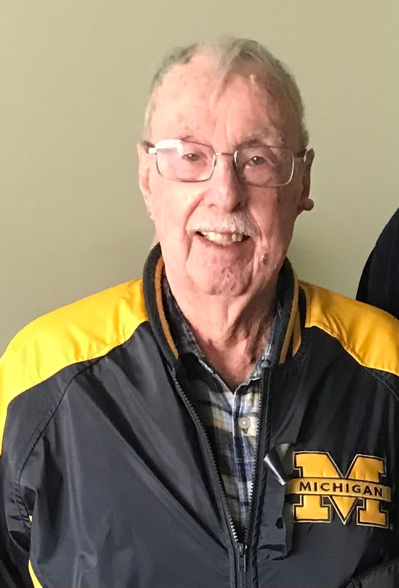

Macomb County man, 90, dies after COVID-19 vaccine — but doctors say shots are safe
Daniel Thayne Simpson, a retired accountant from Chesterfield Township who served in the Navy during the Korean War, got his first dose of the Moderna COVID-19 vaccine on Feb.3.
The next day, Simpson, 90, was dead.
'He told my brother he was getting it and he had a sticker showing that he got it,' William Simpson of Ann Arbor told the Free Press.But then, he stopped returning phone calls.
'We were assuming he felt tired or something and went to bed early and never woke up,' William Simpson said.'My brother Dan went over as he often does at 5 in the evening the next day. ...He found my father dead.'
Health officials say the vaccines are safe, and individual reports of deaths after a COVID-19 immunization must be considered in the context of several factors, including the overall death rate among people who've gotten the vaccines compared with the overall death rate of the unvaccinated population.
But Daniel Thayne Simpson's sudden death and the news Wednesday that longtime Detroit TV anchor Karen Hudson Samuels also died the day after she got a COVID-19 vaccine have stoked concerns about vaccine safety.
Samuels' husband told the Free Press that her Feb.9 death was due to a stroke and there’s no way to confirm whether the vaccine had any role.
Simpson's death is among 27 in Michigan submitted to the Vaccine Adverse Events Reporting System.
Operated by the U.S. Centers for Disease Control and Prevention and the U.S. Food and Drug Administration, VAERS allows anyone — a patient, a doctor or nurse, friend or relative — to report any kind of post-vaccine medical problem, from a sore arm to sudden death.The reports are not substantiated or proved to be linked to the vaccines, but they are monitored and investigated as health officials watch for anything that might signal a safety concern.
In the case of COVID-19 vaccines, all data suggest both the Moderna and Pfizer-BioNTech vaccines are safe — despite the 27 deaths reported among Michiganders and 1,170 reports of post-vaccine deaths nationally from Dec.14-Feb.7, said Lynn Sutfin, a spokesperson for the state health department.
'These vaccines have undergone the most intensive safety monitoring in U.S. history,' Sutfin said.
Dr.David Gorski, a professor of surgery at Wayne State University School of Medicine who has written extensively on vaccine safety as managing editor of Science-Based Medicine, explained why some deaths following COVID-19 shots are to be expected.
'When you roll out a mass vaccination program on this scale, which is pretty much unprecedented now, by the law of large numbers there are going to be quite a few reports of people who die or have something bad happen to them after getting vaccinated just by random chance alone,' Gorski said.
'And it takes careful investigation and epidemiology — basic science — to determine if there is a safety signal or if there is an actual adverse event, or if this adverse event is happening at a higher rate than we would expect, than the baseline rate. ...The baseline death rate of 90-year-olds is high because they're 90 years old.'
Deaths among the more than 55 million Americans who have already gotten at least one dose of the vaccines are not higher than deaths among the general population, said Dr.Arnold Monto, a professor of epidemiology and global public health at the University of Michigan.
'Sudden death has not been reported as a consequence' of COVID-19 vaccines, he said.
Among the 27 Michiganders who died after getting a jab in the arm, the average age was 78.The majority had underlying health conditions such as diabetes, cancer, heart or lung disease, Alzheimer's disease and even COVID-19.Most of those who died were residents of long-term care facilities; some were in hospice care, a Free Press analysis of the data shows.
'When you're vaccinating an older population, this is always going to happen,' said Monto, who chaired the FDA committee that recommended emergency use authorization for both of the COVID-19 vaccines now available in the U.S. 'The way we look at this is to compare frequencies in the vaccinated with those who were not vaccinated and see whether there's excess.So individual reports should raise concerns if they are repeated and if they are in excess of what you would expect.
'The purpose of all this reporting is to look for red flags to follow up.'
Severe allergic reactions have been observed in about five people per 1 million doses of the Pfizer vaccine, with nearly three-quarters of those anaphylactic reactions occurring within 15 minutes of getting a shot, according to the CDC.For the Moderna vaccine, severe allergic reactions occurred in 2.8 people per 1 million doses.
That's why patients should be screened for allergies prior to getting an immunization and asked to wait at least 15 minutes following an injection to be sure there's no allergic reaction.Those who administer shots should have emergency medicine such as epinephrine on hand to treat severe reactions.
The most common complaints following COVID-19 shots are typically temporary and relatively minor, and include such symptoms as headache, fever, dizziness, chills, fatigue, pain, nausea, and shortness of breath, according to the CDC.
In most cases, the symptoms are mild, and last only a day or two.
Although Simpson's death happened within a few hours of getting a shot of the Moderna vaccine, it was considered a natural death and no autopsy was completed, said Dr.Mary Pietrangelo, deputy medical examiner for Macomb County.
No autopsy was done, Pietrangelo said, in part because it wouldn't have provided an answer to the questions nagging at Simpson's loved ones: Did the vaccine cause their father's death?Or contribute to it in any way?
'There is no way presently to know if this vaccine had anything to do with the death,' Pietrangelo said
'There's not a test that you can do.There is nothing that you can actually look at that will give you that information.There's too much TV on about forensic offices and a lot of people think that an autopsy is the be-all, end-all to answer all the questions, and you know that doesn't happen to be true.'
Simpson was taking several drugs that suggested underlying health conditions could have caused his death, Pietrangelo said.
'He had several medical conditions, and that was verified through his medications,' she said.'He was taking blood pressure medications.He was taking blood thinner medications.He was taking cholesterol medications.He was taking stomach medications, and a number of non-prescribed things.
'It has the appearance of a natural death.The son did tell our investigators that he had the COVID vaccine the day before, and that there were no complications as a result.
'This situation that we're talking about, about an individual dying in proximity to receiving the vaccine, is actually happening all over the place because millions and millions of vaccines are being given, and they're being given to that very population who have the comorbidities that would certainly predispose them to death.
'And, in fact, the CDC has done studies comparing the population of non-vaccinated, with vaccinated individuals for about 21 different conditions.And the deaths occur far more often in the unvaccinated for various things like heart attacks and pulmonary embolism and stroke, etc., etc.than the vaccinated population.And what they are saying is that these stats are not using any signal that there is a problem with the vaccination.'
Gorski said reports of adverse events after vaccination submitted to the VAERS database have been misinterpreted for years and used for dubious purposes.
In the 2000s, lawyers encouraged parents to report their children's autism to VAERS to bolster their cases against vaccine manufacturers — even though scientists have failed to find any link to autism and vaccines, he said.
Anti-vaxxers have long used VAERS data as proof of harm caused by vaccines when, in fact, the system only lists unsubstantiated claims the problems were caused by the immunizations, Gorski said.
He told the story of a doctor who got a flu vaccine in 2008 and reported to VAERS that he turned into the Incredible Hulk following his shot.It was an attempt to show how easy it is to submit false information to the system, he said.
'You shouldn't leap to the conclusion that anything bad happens after vaccination automatically must have been caused by the vaccination because, again, the law of large numbers says that even if even a small percentage of things that happen, when you ramp something up to hundreds of millions of doses you're gonna find quite a few things happening by coincidence,' Gorski said.
That isn't to say that adverse reactions to the vaccines don't ever happen or that they shouldn't be reported and investigated, he said.
The COVID-19 vaccines are monitored for safety, not only through VAERS, but also through V-Safe, a text messaging system that allows people to report problems post-vaccine directly to the CDC using their smartphones.There also are several other monitoring systems in place, Gorski said.
William Simpson still wonders what happened to his dad.Daniel Thayne Simpson lived independently, he said, and seemed robust and healthy, though a few spots of melanoma were removed in the past and hypertension has long nagged him.
'Did he die from COVID?Was it natural?After all, he was 90 years old,' he said.
'We are quite certain he didn't have COVID.My brother has been buying his groceries for him and all that kind of stuff.My father was a Trump-ist, and at first didn't take anything seriously because it was supposedly a hoax.But then he saw many of his neighbors getting taken out in body bags.Since then, he's been pretty good.
'So here he is, being pretty good.He gets the vaccine and dies — not what we were expecting.'
He said the family is reeling from the sudden loss.Their dad loved music and golf and University of Michigan sports.He sang at his own wedding, William Simpson said, and at the weddings of several family members.
In a tribute to his father's love for music, William Simpson said at his funeral Friday, 'the whole family did the funeral service a capella without a pianist.'
And they're also still struggling with grief from the loss of their mother, Louise Eileen Simpson, who died in early April in a nursing home of an illness that may have been COVID-19, though she never got a test, William Simpson said.His parents left behind five children, nine grandchildren and 11 great grandchildren.
'I don't think of myself as an emotional guy, but sometimes I just break down in tears with the amount of deaths,' William Simpson said.'There's just been so much death.
'That's the thing, people die every day.So you're always looking to see how many
more deaths are there — that's the epidemiology.Maybe now people will know about this, and will report these deaths to VAERS and we can learn more about it.'
Monto, an octogenarian, has gotten the first dose of a coronavirus vaccine.He said these reports shouldn't deter others from doing the same.
'We know that there are life events that happen, which would have happened in the absence of the vaccine,' he said.'I have no idea why this individual died.'
Free Press staff writer Nour Rahal contributed to this report. Contact Kristen Jordan Shamus: kshamus@freepress.com.Follow her on Twitter @kristenshamus.
Posted On: 2021-02-18T14:08:00
Posted By: Kristen Jordan Shamus

Content Date: 2021-02-18
Download Date: 2021-09-16
Document ID: L0C04G600